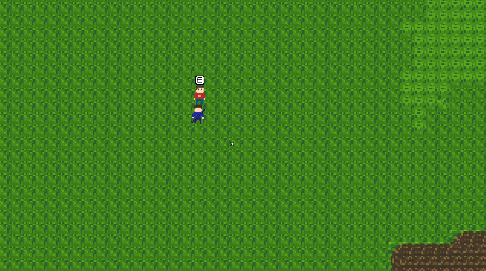
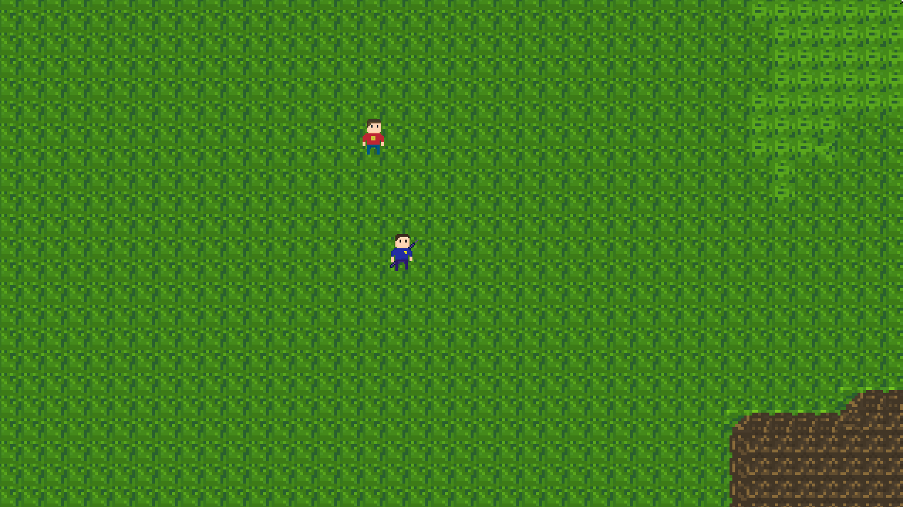
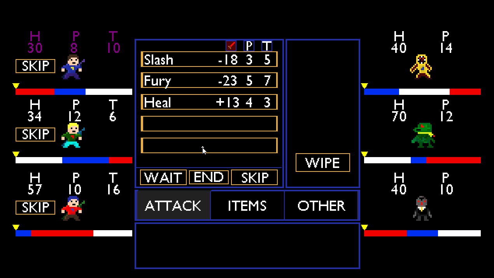

Hello everyone, welcome back to another dev-log. We will talk about the new shop system, and other features that go along with it. We will also go over some new items to buy at the shop. I also want to cover the descriptions feature that I have been wanting to add for ages. So, let’s get into it.
First, the brand-new shop system. If you go to the top left corner of the screen, you will find a new NPC. His name is Chris and he is the shop keeper. Once you talk to him, he will grant you access to the shop. He has randomized text to keep interactions varied, however there are only a few text options so it’s not too varied right now, but you get the point. Once you open the shop menu, you will be greeted to a familiar sight. I re-used the same structure and assets from the inventory system to save time by avoiding making new assets. You can also see your current amount of money in your wallet near the top, the default is 500.

You can choose from Weapons, Armor and Consumables. Once you click one you will get access to the catalog. All of the item’s stats are listed and there is a also a description on the bottom right corner (but we will get to that later). When you decide what you want to buy, simply click on the item to purchase it. Buying items takes money and each item can have their prices changed individually. This means that in the future I can have multiple shops with different prices. When you are done shopping just press “E” again to exit the menu.
I am happy with the way the shop turned out. Recycling the assets from the inventory helped to save lots of time. Also, thanks to the item infrastructure I have created, adding new items to the shop was extremely simple.
Speaking of items, there are many new ones. 6 new weapons, 4 new armor sets and 5 new consumables. Let’s go over them…
Weapons
- Stone Axe, A simple Stone Axe. The designs are over 100 year old! It is quite heavy however, lowering your speed by 1.
+5 Attack, -1 Speed, Melee.
- Feather’s Bow, A bow as light as a feather, increases your speed by 2.
+4 Attack, +2 Speed, Ranged
- Guardian’s Shield, A powerful, durable shield. It increases your defenses by 5 and points by 1. However, due to it's bulky nature, your speed it decrease by 1.
+1 Attack, +5 Defense, -1 Speed, +1 Max Points, Melee.
- Pointy Staff, An incredibly pointy staff. It's pointiness grants you 3 extra points!
+3 Attack, +3 Max Points, Ranged
- Magic Sword, A magic sword that shoots beams of light. Boost all of your stats.
+6 Attack, +2 Defense, +2 Speed, +2 Max Points, Ranged
- Legendary Sword, A legendary sword that has the sharpest blade of the land. Boost all of your stats.
+10 Attack, +4 Defense, +4 Speed, +4 Max Points, Melee
Armor
- Thorn Armor, You don't want to touch this set of armor, it's thorny exterior makes for a bad time. However, it does increase your attack against enemies.
+1 Attack, +4 Defense
- Pointy Armor, There is no point to this armor, it's just pointy and give you many points. But remember, there are no points. This armor grant you 2 points when you wear it.
+5 Defense, +2 Max Points
- Magic Armor, A magical set of armor. Boost all of your stats.
+2 Attack, +7 Defense, +2 Speed, +2 Max Points.
- Legendary Armor, A legendary set of armor. Boost all of your stats greatly.
+4 Attack, +10 Defense, +4 Speed, +4 Max Points.
Consumables
- Liquid Fire, Drink this and your soul will fill with flames, boosting you attack and speed!
+1 Attack, +2 Speed, 3 Time
- Cool Drink, Take a break and cool off. Slows you down, but replenishes points and health.
-4 Speed, +30 Health, +5 Points, 3 Time.
- Sugar Packet, Eat one of these and go crazy! Boost speed but lower health and attack.
-3 Attack, +15 Speed, -5 Health, 2 Time
- Magic Potion, A magical potion that boosts all your stats!
+5 Attack, +5 Speed, +20 Health, +5 Points, 3 Time
- Legendary Potion, A mystic potion that is shrouded in legend. They say it boost all your stats dramatically.
+10 Attack, +10 Speed, +35 Health, +10 Points, 5 Time.
In total, that is 15 new items. Like I said earlier, all of these were easy to add into the game, so I added as many as I had ideas for. You may see a trend with some of them, specifically the magic and legendary items which boost all your stats to a certain degree. You can also read all the description above. Every item and attack have a description, and they have for the entire game development cycle so far. However, there has never been a place to display the description. Until now…

In the bottom left corner (except party menu, which is on the bottom) of all menus, you can find a box. When you hover over an item, this box fills in with the description. This tells you exactly what the item does. This also works in battles with a new menu on the bottom. I had to move everything up slightly to make it fit, but it works great.

It adds a whole other layer of complexity when everything you do now has a readable snippet to go along with it. I think is adds a lot to the game and I am happy I did it.
The next few changes I want to make are much more polished based. Polishing up the battle system a bit more and trying to start wrapping things up for the demo. There isn’t much left to add to Update 8, so hopefully I can get that out soon enough.
Thanks for reading,
Andy